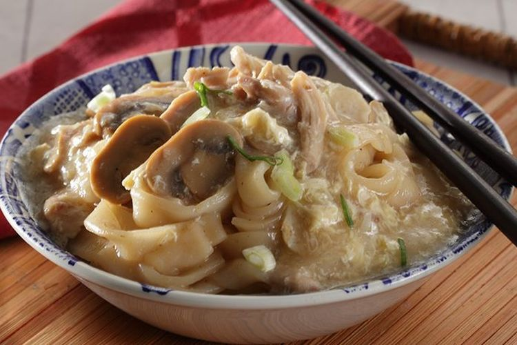

Kwetiau Siram

Description:
Kwetiau Siram adalah hidangan mie khas Tionghoa Indonesia.
Kwetiau siram punya kuah yang kental dengan campuran bumbu, sayur, dan daging yang disiram setelah kwetiau ditumis.
Ingredients:
Bahan Kuah:
- 2 Fillet Babi
- 3 siung bawang putih
- 5 biji bakso ikan
- 2 butir telur
- 3 sdm saus tiram
- 1 1/2 sdt kecap asin
- 3/4 sdt garam
- 1/4 sdt merica bubuk
- 800 ml kaldu ayam
- 1 batang daun bawang
- 3 sdm tepung maizena (dilarutkan)
- 1/2 sdm minyak wijen
- 2 sdm minyak tumisan
Bahan Lainnya:
- 300gr kwetiau basah
- 1 siung bawang putih
- 1 sdt kecap asin
- 1/8 sdt merica bubuk
Cara Memasak:
- Tumis kwetiau dengan satu sendok minyak, tumis bawang putih sampai harum. Masukkan kwetiau,
tambahkan kecap asin dan merica bubuk. Aduk sebentar. Sisihkan.
- Bikin kuah siramnya. TUmis bawang putih, masukkan babi dan bakso ikan
- Tambahkan saus tiram, kecap asin, garam, dan merica. Aduk rata. Tuangkan kaldu. Masak sampai mendidih.
- Tambahkan larutan maizena. Aduk sampai meletup-letup. Tambahkan telur, aduk sampai berserabut.
- Masukkan daun bawang dan minyak wijen. Siram kuah ke kwetiau yang sudah ditumis sebelumnya.